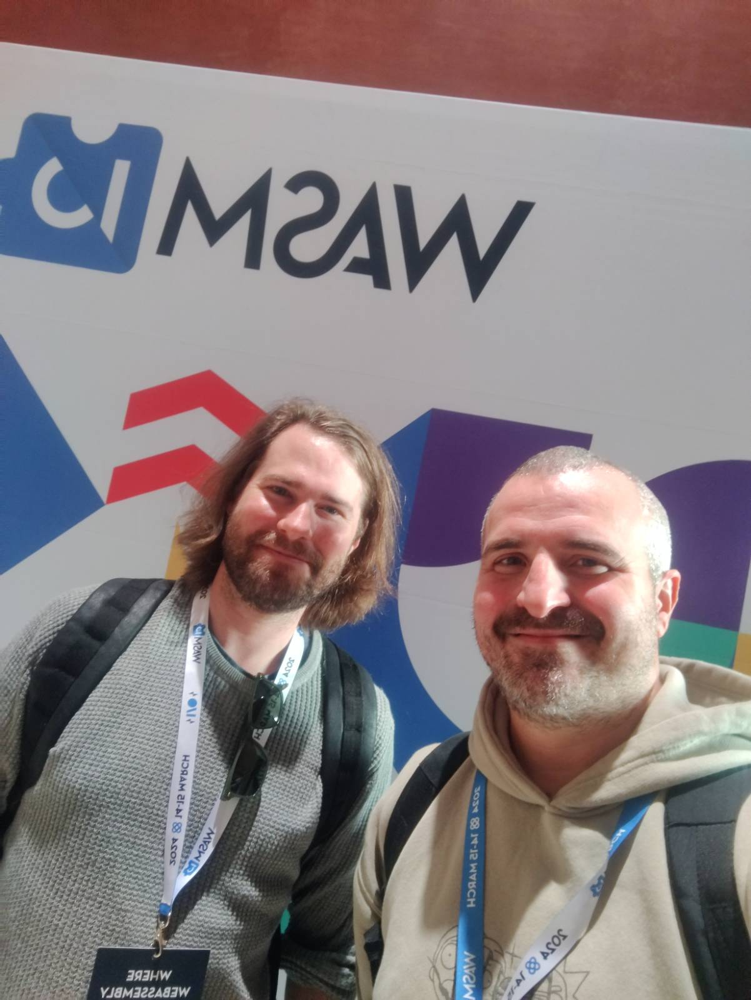
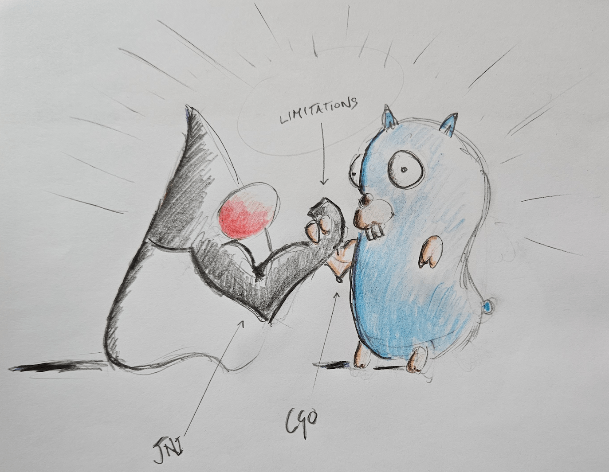

# Chicory </img> Creating a Language-Native (JVM) Wasm Runtime

Benjamin Eckel
@bhelx
Andrea Peruffo
@and_prf
# Why The JVM: Learning from Others - IDEs - Strong Compatibility - Debugging - Profiling - Monitoring - Optimization Note: - So, why are we talking about the JVM at a Wasm conference? - Why are we not talking about it? - It's odd how little we talk about the JVM. - The JVM was created with nearly the same goals in mind as Wasm, but has a 30 year headstart. - There were some previous talks that mentioned this theme of learning from others. - I think if you're working on Wasm and you don't have experience with the JVM, you should take some time to study and use it.
# Why The JVM: 30 Years of Value Creation <div class="row"> <div class="col" style="background: inherit;"> <ul> <li>Enterprise</li> <li>Cloud</li> <li>Mobile</li> <li>Tools and Services</li> <li>Manufacturers</li> <li>Banks and Finance</li> <li>Healthcare</li> <li>Insurance</li> </ul> </div> <div class="col"> <br /> </div> </div> Note: - Second, and most important to this project, Is the mountain of value that has been created by the JVM. - Stop for a second and reflect on how deeply the JVM is emebedded into the modern economy. - There's 30 years of JVM software in the world creating hundreds of billions of dollars in value across nearly all business verticals. (conservative estimate) - Think about all the massive public companies that are built on the JVM. - Think about the ecosystems as well, like Android that, power billions of devices across the world.
# How Do We Unlock the Value with Wasm? - Why not compile JVM bytecode to Wasm? - Wasm unlocks the full value of applications by making them programmable <!-- .element: class="fragment" --> - Embed Wasm into the JVM <!-- .element: class="fragment" --> Note: - Okay Wasm is the future, why do we care about the past 30 years of software? - This talk is about embedding Wasm into the JVM, but shouldn't we be focused on compiling all this JVM code to Wasm instead? - We believe the most compelling reason to use Wasm will be that it can unlock the full value of your applications by turning them into programmable platforms. - We think exposing a Wasm interface will become the norm for integrations. - Because Wasm will help us scale the complexity of integrations by facilitating multiple orders of magnitude more interactions then HTTP APIs can. - And this is why embedding Wasm in the JVM is important.
# How do we execute Wasm in the JVM today? - Many mature options for running Wasm - wasmtime, wasmer, wasmedge, v8, etc Note: - There are a number of Wasm runtimes that you can run in the JVM today. - So why do we need a new runtime? - The primary issue is these runtimes are all written in languages like c++ and rust and distributed as native code.
# Loading Native Code in the JVM Has Downsides - Distribution: Makes your app platform specific <!-- .element: class="fragment" --> - Runtime: Execution leaves safety and observability of the JVM <!-- .element: class="fragment" --> Note: - Distribution: The primary reason people target the JVM is for it's platform dependence. This violates it. - Runtime: Jumping into the native code leaves the safety and observability of the JVM. It also adds complexity and overhead when translating across the boundary.
# Within the JVM Boundaries - Guaranteed Memory Safety - Fault Isolation - Super advanced JIT - Self contained programs - WORA: (Write once run anywhere) Platform independent bytecode - ... more! Note: - So lets talk about specifics, what are the benefits of staying within the boundaries of the JVM?
# Is it a VM?
# Language Native Runtimes <img style="width: 40%;" src="imgs/racingVSjeep.jpeg"> <br /> The solution is a "language native" runtime Note: - We don't expect our runtime to replace the state-of-the-art runtimes - But rather to fill in the gaps and maximize portability - As well as provide a better developer experience - Analogy: F1 vs off-road - I could see a way that we might make it a switchable system
# Wazero  <br /> Following the lead Note: - We are not the first to have done this - We consider ourselves spiritual cousins to Wazero - Credit to Edoardo for this incredible work of art - Although Go and Java are very different, linking to native code creates similiar problems - We think this problem is not unique to these two languages
# Introducing Chicory </img> <br /> [https://github.com/dylibso/chicory](https://github.com/dylibso/chicory) Note: - Andrea is going to talk about - how the project came to be - what techniques we're using - what use cases have emerged - and what the future holds and how you can get involved
# Inception - side project - 6 months of development Note: Edoardo Vacchi introduced me to Ben and we shared the vision of a Java native Runtime for Wasm We want it to be zero dependencies to be easily portable as possible. In 6 months we got to the point where most of the V1 spec is implemented on the "happy path", making it possible to run real world programs compiled to wasm, and we started implementing the validation logic.
# Build a language native runtime 1/2 - generate code for `OpCodes` - wasm corpus - maven plugins - code generators <br /> code in vcs: 13K LOC <br /> with generated: 250K LOC Note: If you want to build a language native runtime for wasm those are the tools that are working for us.
# Build a language native runtime 2/2 generate tests! - download the [WebAssembly/testsuite](https://github.com/WebAssembly/testsuite) - download [`wast2json`](https://github.com/WebAssembly/wabt) - use `wast2json` on the `testsuite` `.wast` files - get `json` + `compiled programs` - generate JUnit from the `json` Note: Those are the steps to generate JUnit tests from the testsuite
# Use cases Note:
<img src="./imgs/jruby.png" height="20%" width="20%" style="height: 20%; width: 20%;"></img> ## + <img src="./imgs/ruby-prism.png" height="20%" width="20%" style="height: 20%; width: 20%;"></img> ## An Unexpected Journey Note:
## An Unexpected Journey - Prism: C Parser for Ruby - JRuby: Ruby on the JVM - Bootstrap: FFI to cross compiled C libs Note:
<img src="./imgs/keycloak.svg" height="30%" width="30%" style="height: 30%; width: 30%;"></img> <br /> [Keycloak](https://github.com/pedroigor/keycloak-wasm-policy-provider) policy provider Note: Keycloak is a popular Identity Management software, allowing features like Single Sign On to be easily implemented within corporate services. It's widely used in the Enterprise and it has a wide range of functionalities, for example it allows you to authenticate your accounts with a variety of services, even the old one like Kerberos. Sometimes, the configuration is not enough and you need to write a little plugin to fully customize the behavior of the authentication logic. In this example we integrated a Keycloak Policy Provider able to load and execute wasm functions to verify the user authentication, the wasm module have access to the user context using Host Functions.
# More use-cases - [Apache Camel](https://camel.apache.org/components/4.4.x/wasm-component.html) producer - [Kafka Connect](https://lburgazzoli.github.io/posts/2024-02-01_apache_kafka_connect_meets_wasm_part_1/) transformation - [Apache Pulsar](https://lburgazzoli.github.io/posts/2023-06-13-apache-camel-pulsar-function-pt_1/) function - [Kroxylicious](https://github.com/andreaTP/kroxylicious-wasm) filter Note: By using extension mechanisms we are scaling the complexity of the applications.
# Roadmap - Make all tests green with the interpreter - Implement validation logic - WASI Preview 1 support - Performance improvements - AOT compiler (generate JVM bytecode from Wasm module) Note:
# Thanks and Q&A <img src="./imgs/contributors.png" height="30%" width="30%" style="height: 30%; width: 30%;"></img> <br /> <a href="https://github.com/andreaTP/chicory-wasmio-deck">https://github.com/andreaTP/chicory-wasmio-deck</a> <br />